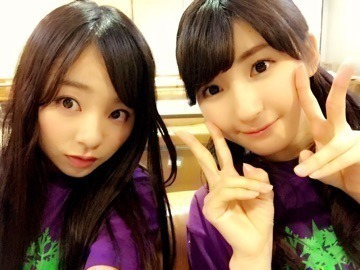
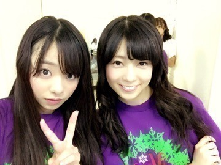
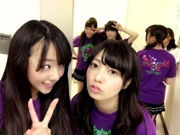
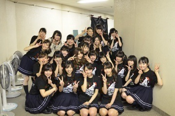

| 2014/12 18 Thu | ～Xmasの思い出～ ま に。 |
皆さん。お疲れ様です.＊
ろってぃ−だよ？まにだよ？
鳥の羽。。

インクつけると文字が書けるんです。
一昨日ある撮影をしてきまして、そこで見つけました(・ω・)ノ
わざとやないけど、鼻に入りそう。。。
そして告知します。
毎シーズン出している、乃木坂46の写真集。。 ようやく来ました、ラスト冬号.＊
私ろってぃーも出ていますので、是非皆さん買ってみてくださいね（＾ω＾）
メイキング映像も配信されておりますので、是非是非。。。

ーーーーーーーーーー
よしっ ということで
～アンダーライブ セカンドシーズン～
～Merry Xmas Show 2014～
について触れていきます。。。
とりあえずLIVE後 ボサボサヘアーのまま撮ったお写真たちを貼りますね（＾ω＾）
さゆりと。

もう1枚。

さゆりは仕事やプライベート時に、、そして私の居ない所でも 私の話をしてくれます。本当に感謝してるし、大好き（＾ω＾）
さゆりはずっとまひろの正義のヒーローです。
ゆうり。

ゆうりと、、あみとちま。

ゆうりとは似てる所が多々ある。笑
「まにとゆうりって話噛み合わなさそー」って言われたことがあるけど、
噛み合わなかった試しがない位にフィーリングが合う♪
2人とも綺麗好きやから
2人してメンバー達に「お願いやから最低限の片付けはちゃんとやってくれヽ(´o｀；」ってあきれることがしょっちゅうある 笑
後、ゆうりの好きな所はちゃんと人を見てる所。まひろがいらいらして間違ったことを言っても、ちゃんと正しいことを言ってくれる所。
だから まひろもゆうりが間違ったことをしたらそれは違うよ！って言える（＾ω＾）
あれ？
なんだかLIVEのことじゃなくて、メンバーの話になっちゃった。。。
気を取り直して。。。♪
アンダーライブでは本当に感動と感謝をもらいました。
800人の会場をずっとやってきて、
いきなり8000人という大きな会場を
私達アンダーメンバーだけで埋めることができました。
私達は正直色んなことに対して、すごくすごくすごくすごく、、、言葉では表せない程の悔しくて辛い思いをしてきました。
私達はメディアに出れない分、本業である歌って踊ること、ライブパフォーマンスは 選抜に負けたくない！って思いが強くありました。
それでアンダーライブが始まってすぐの頃に 『乃木坂のライブ選抜メンバー』って言われるように頑張ろう！って話したりしました。
今 乃木坂46に求めていることが、他のアイドルチームより飛び抜けた歌唱力とダンスなので私自身もっと頑張って皆のことも引っ張っていけるように頑張ります♪
有明コロシアムで見たあの景色は本当に感動でした。
とりあえず一曲目は涙がこみ上げてきました。でも絶対泣きたくな～い^^*
目指してるものはまだまだ先にあるから、今泣いたらダメなんです。
まだ涙は置いときたい、メンバー達が泣いてる時 私は笑っておきます*^^
そして、今回アンダーライブでは『神企画』がありました～ヾ(＠⌒ー⌒＠)ノ
『全員センター』です！！！
皆集ってくじ引きで決めたんですけど、私ろってぃーは、、、
『音が出ないギター』を有明コロシアムのあのステージで熱唱させて頂きました♪
イントロで 私にスポットライトがあたり、ソロダンスをやらせて頂きました！
もちろん自分で考えて踊りました。
どうでしたかね、、、f^_^;)？
ダンスの先生が まひろならその場で適当に踊れるやろ？って言って
ハードルあげてくるんです.＊笑
でも自分らしいダンスはできたんじゃないかな？って思ってます(*^^*)♪
本当に色んなメンバーがセンターするという企画は最高だな。と思いました！
だってね、
ひめかのロマンスのスタート。
ゆうりのロマンティックイカ焼き。
とか合ってるのは合ってるけど、
中には、
らりんの気づいたら片想い。
2期生ことこのガールズルール。
だとか、そーきたかーーー！！！
っていうのもあって、本当に面白いし楽しい企画だ(*^^*)と思いました。
後、もう一つ面白い企画がありました！
コントです。
コントでは 何故か主役的な立ち位置に立たせて頂きました。
残念姉妹。という超貧乏な役をやらせて頂きました。笑
長女→さゆり。
次女→まひろ。
三女→あすか。
最終的に色々あって 私が撃たれてしまい死ぬ。。。。かと思いきや生き返るってストーリーです。
ざっくりすぎる。笑
アンダーライブ直後の集合写真です.＊

～Merry Xmas Show 2014～
も本当に楽しい時間をファンの皆さんと過ごすことができました。
皆さんが投票してくださったカップリング曲、ベスト30を3公演に渡り発表して行きました。
30曲中12曲も歌うことができました。
そして、、、本当に嬉しかったことが。。
まひろ/まいやん/みさ/れいか/かずみのユニット『私のために誰かのために』が2位になりました！
本当に嬉しいです。
この曲はLIVEでもほとんど歌うことがなく 1年に1回とかしか歌わないのにこんなにも沢山の方に支持してもらえて幸せです。
有明コロシアムで、頭サビを5人でアカペラで歌わせて頂きました。
まひろが歌ってるところを見て
ジョンソンことあみあみが泣いてくれました。笑
ありがとう。
ではでは、今からお仕事頑張ります！
皆 大好きだよ？
のし。
コメント(480)
2014/12/18 17:12